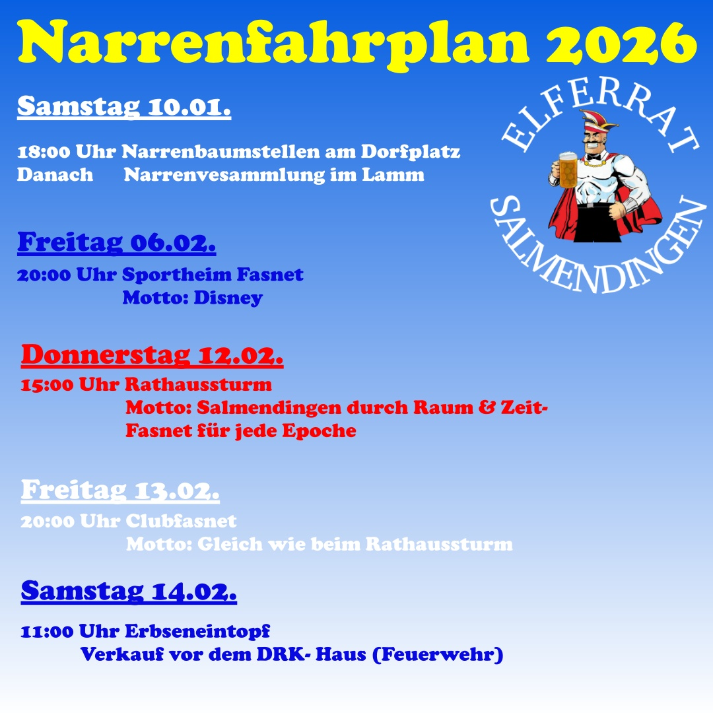

Narrenfahrplan 2027
Alle Termine, Umzüge und Highlights der Salmendinger Fasnet auf einen Blick!
00
Tage
00
Stunden
00
Minuten
00
Sekunden
Rückblick: So war das Programm 2026
Die originale Programmübersicht aus dem Vorjahr zum Vergleich und In-Erinnerung-Schwelgen.

Narrenfahrplan 2026 – Teil 1
Narrenfahrplan 2026 – Teil 2